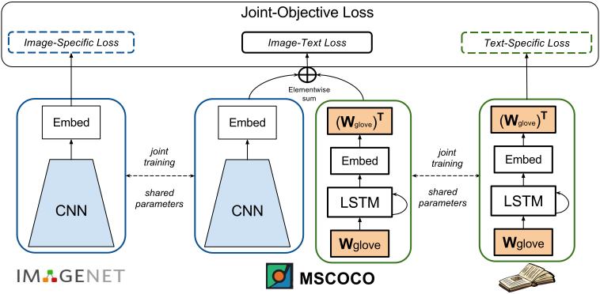

Captioning Images with Diverse Objects
Abstract
Recent captioning models are limited in their ability to scale and
describe concepts unseen in
paired image-text corpora. We propose the Novel Object Captioner
(NOC), a deep visual semantic captioning model that can
describe a large number of object categories not present in existing
image-caption datasets. Our model takes advantage of external sources
-- labeled images from object recognition datasets, and semantic
knowledge extracted from unannotated text.
We propose minimizing a joint objective which can learn from these
diverse data sources and leverage distributional semantic embeddings,
enabling the model to generalize and describe novel objects outside of
image-caption datasets.
We demonstrate that our model exploits semantic information to
generate captions for hundreds of object categories in the ImageNet
object recognition dataset that are not observed in MSCOCO
image-caption training data, as well as many categories that are
observed very rarely. Both automatic evaluations and human judgements
show that our model considerably outperforms prior work in being able
to describe many more categories of objects.
PDF
Poster
Slides
Talk
Overview
Our goal is to generate captions for novel objects not
present in paired image-caption training data but exist in image
recognition datasets e.g. ImageNet. (More
in the blog post here.)
We propose a joint training strategy with auxiliary objectives which
allows our network to learn a captioning model on image-caption pairs
simultaneously with a deep language model
and visual recognition system on unannotated text and labeled images.
Unlike previous work, the auxiliary objectives allow
the NOC model to learn relevant information
from multiple data sources simultaneously in an end-to-end
fashion.

Typically, image-captioning models incorporate a visual classifier
pre-trained on a source domain (e.g. ImageNet dataset) and then tune
it to the target domain (the image-caption dataset). However,
important information from the source dataset can be suppressed if
similar information is not present when fine-tuning, leading the
network to forget (over-write weights) for objects not present in the
target domain. Our joint training strategy remedies this.
Additionally, our language model incorporates dense representation of
words on both the input and output allowing the model to compose
sentences about novel objects.
Examples
Click here
for lots more examples.
Example captions of ImageNet objects in different contexts.
Comparing captions generated by our NOC model with prior work (DCC).
Click here
for lots more examples.
Code and Generated Captions
Download Captions
Download
all captions here.
Captions generated by NOC on MSCOCO images containing the 8 held-out
objects.
Beam
search width 1 (F1: 50.51, Meteor: 20.69)
Sampled
(F1: 48.79, Meteor: 21.32)
Captions generated by NOC on ImageNet test images of objects never
mentioned in COCO.
ImageNet
testset captions
Captions generated by NOC on ImageNet test images of objects
mentioned rarely in COCO.
Rare
objects captions
ImageNet images and captions sampled for Human Evaluation (using
Amazon Mechanical Turk).
Objects
which both NOC and DCC can describe (Intersection)
Objects
which either NOC or DCC can describe (Union)
The code to prepare data and train the model can be found in:
Download pre-trained model:
Evaluation Code:
https://github.com/vsubhashini/caption-eval
Reference
If you find this useful in your work please consider citing:
@inproceedings{venugopalan17cvpr,
title = {Captioning Images with Diverse Objects},
author={Venugopalan, Subhashini and Hendricks, Lisa Anne and Rohrbach,
Marcus and Mooney, Raymond, and Darrell, Trevor and Saenko, Kate},
booktitle = {Proceedings of the IEEE Conference on Computer Vision and
Pattern Recognition (CVPR)},
year = {2017}
}